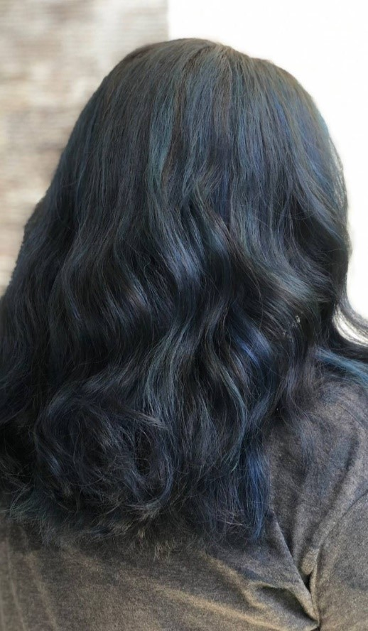

INTRO Jun 6, 2022
Just an ordinary person
I am Nur Faridah Hanum Binti Jamalul Anuar, I was born on June 13, 2001. I am a brother and sister of three brothers and sisters. In this blog I'm going to tell you about my life all along.
I was an orphan, my father died when I was 7 years old and after that my mother took over my father's duties. He was a mother, and he was also a father who raised five children. As a sister I was supposed to lighten my mother's burden and help my mother to move on with our family life. It started my life story here.
After graduating from high school, I had the opportunity to work in a nearby hair saloon at my house and that's where I learned about real life. I met a wide variety of people who have a lot of variety of their own. I worked there soon and was able to continue my studies at the university.
But in 2020 the world is in the throes of a virus that causes many people to lose their jobs, incomes and so on. And the lessons are continued online. I took the opportunity to do a small business which is to service saloons house to house. That's where I have the money to help my mother. To my mother's knowledge it's just a small confectioner.
Well so far, it's just sharing myself. I'm going to continue by sharing about my mother, brother, and sister.
Faridah Hanum
UiTM Student